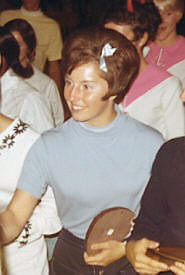

Linda Metheny (USA)
1964, 1968 and 1972 Olympian
1966 and 1968 AAU AA Champion

Linda was born on August 22, 1948. She and her husband, Dick Mulvihill (who was her coach), produced many well-known gymnasts at their club in Oregon, the National Academy of Artistic Gymnastics. Tracee Talavera, Julianne McNamara, Karen Kelsall, Yolande Mavity and Leslie Pyfer are a few of the gymnasts who trained under the Mulvihills.
Competition Results
1961
National Gymnastic Clinic Age Group Championships (15 and under): 3rd UB
1964
AAU Championships: 7th AA, 2nd UB
AAU Jr. Nationals: 1st AA, 1st V, 1st UB, 1st B,
1st FX
Olympic Games:9th Team, 36th AA
US Olympic Trials: 4th AA
USA-CSSR Dual Meet: 2nd Team, 12th AA
1965
AAU Championships: 1st UB
CAN-USA Dual Meet: 1st Team, 1st AA, 1st B, 2nd FX, 3rd V
Penathlon Gym Championships: 1st AA, 1st V, 1st UB, 1st B, 1st FX
1966
AAU Championships: 1st AA, 1st B, 1st FX
Holiday Gymnastics Championships: 1st AA, 1st V, 1st UB, 1st B, 1st FX
North American Championships: 4th AA, 2nd UB, 2nd FX, 3rd B
1967
AAU Championships: 2nd AA, 1st UB, 1st FX, 2nd B
Pan American Games: 1st Team, 1st AA, 1st V, 1st B, 1st FX, 2nd UB
Pan American Trials: 1st AA
University Games: 2nd AA
Women's Collegiate Nationals: 3rd AA, 1st B, 2nd FX, 3rd V
1968
AAU Championships: 1st AA, 1st B, 1st FX, 3rd UB
North American Championships: 1st AA, 1st B, 1st FX, 3rd V
Olympic Games: 6th Team, 28th AA, 4th B
Women's Collegiate Nationals: 1st AA, 1st B, 1st FX, 5th V, 6th UB
1969
Copa de las Americas: 1st AA, 1st UB, 1st FX, 3rd B, 4th V
1970
AAU Championships: 1st AA, 1st B, 1st FX, 1st UB
1971
AAU Championships: 1st Team, 1st AA, 1st B, 1st FX
Chunichi Cup: 15th AA
Mid-American Conference Championships: 1st Team, 1st AA, 1st UB, 1st B,
1st FX
Pan American Games: 1st Team, 2nd AA, 1st FX, 2nd UB, 3rd B, 6th V
USGF Championships: 1st AA, 1st B, 2nd UB, 2nd FX, 3rd V
YMCA National Championships: 1st Team, 1st AA, 1st FX, 3rd V, 3rd UB, 5th
B
1972
AAU Championships: 1st AA
Midwest Open: 1st AA
Olympic Games: 4th Team, 36th AA
US Olympic Trials: 2nd AA
This page was created on March 17, 2000
and was last updated on June 23, 2021.
© Gymn Forum